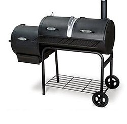
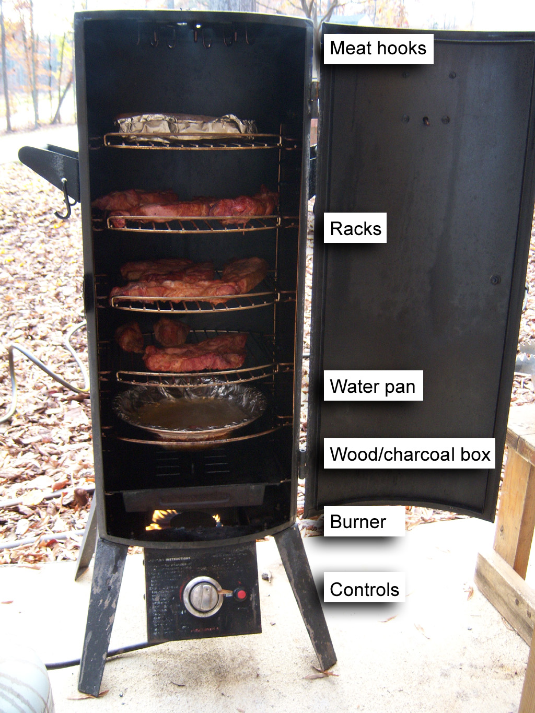
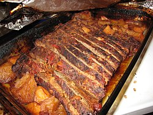
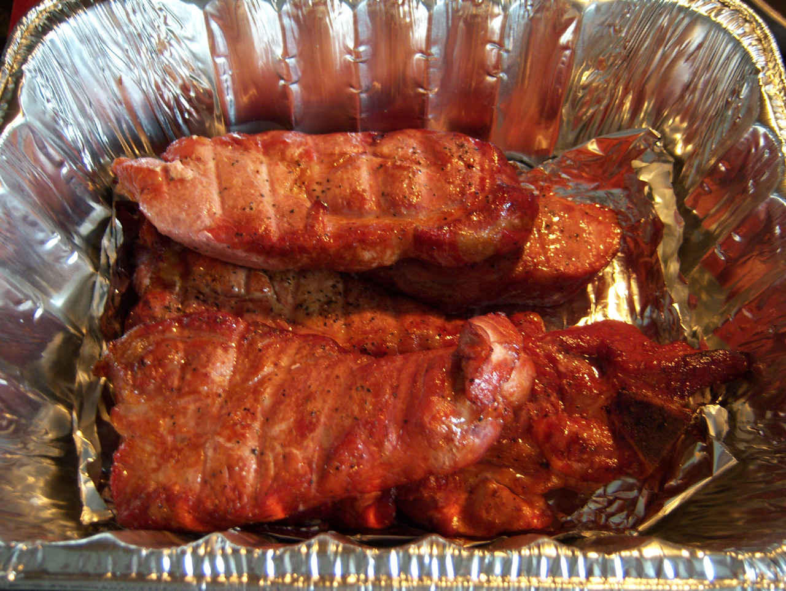

Smoking Times Reference
| Meat | Smoker Temp | Internal Temp | Approx Time | Notes |
|---|---|---|---|---|
| Brisket (whole packer) | 225–250°F | 203°F | 12–18 hr | Stall at ~165°F; wrap in butcher paper |
| Pork Butt / Shoulder | 225–250°F | 205°F | 10–14 hr | Bone-in adds flavor; pull-apart at 205°F |
| Baby Back Ribs | 225°F | 190–203°F | 4–5 hr | 3-2-1 method or 5hr unwrapped |
| Spare Ribs (St. Louis) | 225°F | 195–203°F | 5–6 hr | Bigger, meatier; longer cook needed |
| Whole Chicken | 250–275°F | 165°F | 3–4 hr | Higher temp for crispier skin |
| Chicken Wings | 275°F | 165°F | 1.5–2 hr | High temp renders fat, crisps skin |
| Whole Turkey | 250°F | 165°F breast | 6–8 hr | Brine 24hr before; tent if darkening fast |
| Salmon Fillet | 180°F | 145°F | 2–3 hr | Cure with salt/sugar 1hr before; low temp |
| Beef Ribs (Plate) | 250–275°F | 205°F | 8–10 hr | "Brisket on a stick"; don't wrap |
| Lamb Shoulder | 225–250°F | 195°F | 8–10 hr | Apple or cherry wood pairs well |
| Pork Belly (burnt ends) | 250°F | 200°F | 6–8 hr | Cube at 160°F, toss in sauce, back on smoker |
| Chuck Roast | 250°F | 205°F | 7–9 hr | "Poor man's brisket"; wrap at 160°F |
The Golden Rule
All times are approximate — always cook to internal temperature, never by time alone. Meat size, fat content, starting temp, and smoker calibration all affect cook time. A calibrated thermometer with a leave-in probe is the single most important tool you own.
Smoking Woods
Oak
The universal smoking wood. Medium smoke, earthy and slightly sweet. Pairs with: beef, pork, lamb, game. The backbone of Texas BBQ. Available as chunks, chips, or whole splits. Post oak is the Texas pitmaster's preference.
Hickory
Strong, rich, bacon-like smoke. Classic American BBQ wood, especially in the South. Pairs with: pork, ribs, bacon, brisket. Use moderately — heavy use can turn bitter. The aroma alone will bring neighbors to your yard.
Mesquite
Intense, earthy, slightly spicy. Burns hot and produces strong smoke — easy to over-smoke. Best for: Texas brisket, beef steaks, hot-and-fast cooking. Not ideal for long smokes; typically blended with milder wood. The wood of West Texas pits.
Applewood
Mild, slightly sweet, fruity smoke. One of the most forgiving woods — hard to over-smoke. Pairs with: pork, poultry, fish, ham. Excellent for beginners. Creates a beautiful mahogany color on chicken and ribs without bitterness.
Cherrywood
Sweet, fruity, mild smoke with a striking dark red color imparted to the meat. Pairs with: almost anything — pork, beef, poultry, game birds. Frequently blended with hickory or oak to add sweetness and color. Cherry smoke ring is particularly vibrant.
Pecan
Mild, nutty, slightly sweet. A member of the hickory family but gentler. Pairs with: pork, poultry, beef. Great for those who find hickory too strong. Popular in the American South. Pecan shells can also be used for lighter smoking.
Alder
Delicate, light, slightly sweet smoke. The traditional Pacific Northwest wood for smoking salmon and other fish. Also pairs with: poultry, pork. Very mild — won't overpower delicate proteins. Traditional in Native American salmon smoking techniques.
Maple
Sweet, mild, subtly smoky. One of the sweeter smoking woods. Pairs with: poultry, pork, game birds, vegetables. Often used to smoke Canadian bacon. Blends well with applewood or cherry for a sweeter smoke profile.
Grapevine
Fruity, light, slightly tangy smoke derived from wine country waste. Pairs with: lamb, game, pork, poultry. Particularly popular in wine-producing regions of Europe. Burns quickly — use as accent wood mixed with longer-burning oak or hickory.
Walnut (Black)
Heavy, strong, slightly bitter smoke. Used sparingly — best blended with a sweeter wood. Pairs with: big cuts of beef, game, wild boar. Overpowering in large quantities. Best as an accent (25% blend) with milder wood like apple or cherry.
Bourbon Barrel
Used oak bourbon barrels impart vanilla, caramel, and whiskey notes. Widely available as chips or chunks. Pairs with: pork, beef, salmon. Popular in craft BBQ. The residual bourbon in the wood creates complex flavor compounds during smoking.
Avoid These Woods
Never smoke with: pine, cedar, fir (resinous, toxic terpenes), oleander (toxic), treated/painted wood, plywood, pressboard. Stick to fruit, nut, and hardwood trees. Always use fully seasoned (dried) wood — green wood produces acrid, bitter smoke.
Meats Deep Dive
Brisket
The holy grail of BBQ. Two muscles: flat (leaner, tighter grain) and point (fattier, more marbled). Buy USDA Choice or Prime. Trim fat cap to 1/4". Rub: salt + black pepper (Central Texas style) or add chili powder, garlic. The stall (plateau at 150–165°F) is normal — collagen converting to gelatin. Wrap in butcher paper (not foil) to preserve bark. Rest 1–4 hours in a cooler before slicing. Slice against the grain.
Pork Shoulder / Butt
Despite the name, pork butt is the upper shoulder. The "money muscle" — a cylinder of meat on the front of the shoulder — is the most prized piece. Bone-in adds flavor and acts as a built-in thermometer (bone wiggles freely when done). Pull at 205°F; the muscle fibers have fully relaxed. Inject with apple juice/butter mixture for extra moisture. Great for pulled pork sandwiches.
Ribs — 3-2-1 Method
Three hours unwrapped in smoke (smoke absorption happens here — meat won't take more smoke once collagen starts breaking down). Two hours wrapped tightly in foil with butter, brown sugar, and apple juice (braises internally, renders fat). One hour unwrapped to set the bark and glaze. Works for spare ribs; baby backs need 2-2-1. Done when meat pulls back from bone 1/4" and bends easily.
Whole Hog
The pinnacle of pit BBQ. A 150–200 lb hog requires 18–24 hours over low, indirect heat (225–250°F). Butterflied and laid skin-up for most of the cook, flipped in the last hours. The pit needs tending through the night. Eastern Carolina style: whole hog with vinegar-pepper sauce. Western Carolina: shoulder with tomato-based sauce. Hawaiian kalua pig: cooked underground in an imu.
Turkey
Brine for 24 hours (wet brine: 1 cup salt/gallon water with aromatics, or dry brine: salt rubbed on skin). Smoke at 250°F — higher temperature than other meats to render skin fat and achieve some crispness. Smoke with mild wood (apple, cherry) — turkey absorbs smoke readily. White meat target: 165°F; dark meat can go to 175°F. Spatchcocking (removing backbone) reduces cook time and promotes even cooking.
Salmon
Cold-smoke (below 80°F) for lox; hot-smoke (180°F) for flaked smoked salmon. Cure the fillet first: 50/50 salt and sugar rub, refrigerate 1–4 hours, rinse, then let pellicle form (tacky surface dries in the fridge or with a fan). The pellicle is critical — smoke adheres to it. Alder is the traditional wood. Done at 145°F internal; flesh flakes easily and is opaque throughout.
Equipment
Offset Smoker
The classic pit master setup. Firebox attached to the side of a horizontal cooking chamber; smoke and heat flow through the chamber. Requires fire management skill — adding splits every 45–60 minutes to maintain temperature. Creates a fire tunnel that produces the best smoke ring and bark. Entry: Oklahoma Joe's. High-end: Yoder, Lang, or custom-built.
Kettle Grill (Snake Method)
A standard 22" Weber kettle can be an excellent smoker. The snake method: arrange briquettes in a C-shape around the perimeter, light only one end. Temperature holds 225–250°F for 6+ hours as the snake burns along. Water pan in the center. Add wood chunks along the snake for smoke. Cheap entry point into smoking.
Pellet Grill
Burns compressed wood pellets fed by an auger; a digital controller maintains temperature automatically. Set-and-forget convenience makes it accessible. Less intense smoke flavor than offset — the burn is very efficient, producing less smoke. Popular brands: Traeger, Pit Boss, Weber SmokeFire, Rec Tec. Some add a smoke tube for more flavor. Great for beginners.
Kamado (Big Green Egg / Kamado Joe)
Ceramic insulated cooker derived from Japanese mushikamado. Exceptional heat retention; once up to temperature, uses very little charcoal. Can smoke at 225°F or sear at 700°F+. The ceramic creates a moist cooking environment. High purchase cost ($500–$2000+) but very durable. Indirect setup requires a plate setter/deflector.
Electric / Cabinet Smoker
Heating element with a wood chip tray. Excellent temperature control; minimal skill required. Brands: Masterbuilt, Bradley (uses hockey-puck bisquettes). Good for cold smoking cheese or fish where temperature consistency matters. Doesn't produce a true smoke ring (no combustion gases). Convenient for apartment patios where open fire isn't allowed.
Water Smoker (Bullet)
Vertical design: charcoal at the bottom, water pan in the middle, meat on top. The Weber Smokey Mountain (WSM) is the benchmark. Water pan adds thermal mass and humidity, keeping meat moist. Can hold 225°F for 10–12 hours on a single charcoal load. The Minion method (unlit coals with lit coals on top) extends burn time.
Temperature Guide
The Stall Explained
Between 150–170°F internal temperature, large cuts (brisket, pork butt) hit a plateau that can last 2–6 hours. This is evaporative cooling: the meat sweats moisture which evaporates off the surface, offsetting heat input. The solution is "The Texas Crutch" — wrapping tightly in foil or butcher paper to trap moisture and break through the stall. Butcher paper allows some moisture escape; foil creates a braise.
Why 203°F for Brisket?
Collagen (connective tissue) begins converting to gelatin at around 160°F, but this conversion happens slowly. At 203°F, conversion is nearly complete, creating the silky, unctuous texture that makes great brisket. The probe should slide in with no resistance — like probing warm butter. A small variation (200–210°F) is fine depending on the cut's fat content.
The Rest — Non-Negotiable
Resting allows muscle fibers to relax and reabsorb juices that have been pushed toward the center during cooking. Minimum 30 minutes for chicken; 1 hour for ribs; 1–4 hours for brisket and pork butt. The FTC method: wrap in foil, wrap in towels, rest in a cooler. Meat can hold above 145°F safely for 4+ hours this way. Cutting immediately loses 30%+ of juices.
Thermometer Types
Instant-read (Thermapen): 2–3 second read, used for quick checks and final confirmation. Leave-in probe thermometer: stays in meat throughout the cook, connects to wireless receiver or phone app. Essential for monitoring without opening the smoker. Multiple probes let you monitor different spots. Brands: ThermoWorks (Smoke, Signals), MEATER (wireless), FireBoard.
Smoker Calibration
Most built-in smoker thermometers are inaccurate by 25–75°F. Always verify with an independent probe thermometer placed at grate level. Measure temperature at multiple positions — offset smokers have hot zones near the firebox. Adjust your cooking position accordingly. A well-calibrated pit is more valuable than an expensive one with an unknown temperature.
The Probe Test
Internal temperature is a guideline, not the gospel for large cuts. The probe test: insert a metal skewer or thermometer probe across the grain of the meat. It should slide in with zero resistance — like probing room-temperature butter. This tests whether collagen conversion is complete and the meat is truly done, regardless of the exact temperature reading.
Tips & Tricks
Fire Management (Offset)
Maintain a clean, small fire rather than a large, smoldering one. Blue smoke (nearly invisible) is ideal; white billowing smoke creates bitter, acrid flavor. Keep the exhaust vent fully open — control temperature with the intake vent only. Add splits before the existing fire dies down completely to avoid temperature swings. Fully lit splits = blue smoke.
The Water Pan
A water pan adds thermal mass (stabilizes temperature swings) and creates a humid environment that keeps meat moist and extends the stall. Place directly above the heat source. Some pitmasters use sand instead of water for thermal mass without added humidity (useful in humid climates or for crispier bark). Change water every 3–4 hours for long cooks.
Spritzing
Spraying meat with apple juice, apple cider vinegar, or water every 45–60 minutes after the first 2 hours adds moisture and promotes bark formation. The evaporative cooling also slightly extends the stall. Don't spritz too early — you'll wash off the rub and delay bark formation. Some pitmasters skip it entirely, arguing it opens the lid too often and drops temperature.
Bark Formation
The dark, crispy, intensely flavored crust on smoked meat. Created by: Maillard reaction (proteins + sugars), smoke particle deposition, dehydration of the surface, and crystallization of the salt and rub. Salt draws moisture out initially, then forms a crust. Fat on the surface baste the bark as it renders. Foil-wrapping softens bark; butcher paper preserves it.
The Pink Smoke Ring
The pink band just below the surface of smoked meat is a chemical reaction between myoglobin (the protein that makes meat red) and nitric oxide and carbon monoxide gases from combustion. It has no effect on flavor — it's purely aesthetic, a sign of a wood or charcoal fire. Electric smokers produce little to no smoke ring. Adding sodium nitrite (curing salt) fakes a ring.
The Texas Crutch
Wrapping meat in foil (tightly) or butcher paper (loosely) when it hits the stall at ~150–165°F. Foil creates a moist braise that pushes through the stall quickly but softens bark. Butcher paper (uncoated, food-safe pink butcher paper) lets the bark breathe while still trapping some moisture. Aaron Franklin's method: unwrapped for 6–7 hours, then butcher paper until done.
Selecting Charcoal
Lump charcoal (carbonized wood chunks): burns hotter, less ash, irregular size makes it harder to control, can pop and spark. Briquettes (compressed charcoal with binders): consistent size and burn rate, more ash, easier to stack for snake/minion methods. Kingsford Blue is the benchmark. Avoid lighter fluid — use a chimney starter with newspaper for clean ignition.
Salt Timing
Salt a large cut 24 hours before smoking (dry brine). Salt initially draws moisture to the surface via osmosis, then that liquid is reabsorbed 40–60 minutes later carrying salt deep into the meat. This seasons throughout rather than just the surface. In a time crunch, salt immediately before cooking — but avoid salting 15–40 minutes before, when the moisture on the surface hasn't been reabsorbed yet.
Gallery — Smoke & Fire



